Extraction review - Group 4 (en)
181 questions from group-4-en.pdf - 180 with a picture - 1 with an uncertain picture mapping. The correct option is highlighted in green.
Uncertain picture mapping:
831.PDF page 1 - g4-q001
When making a right turn, is it permitted to enter the lane indicated by this sign?
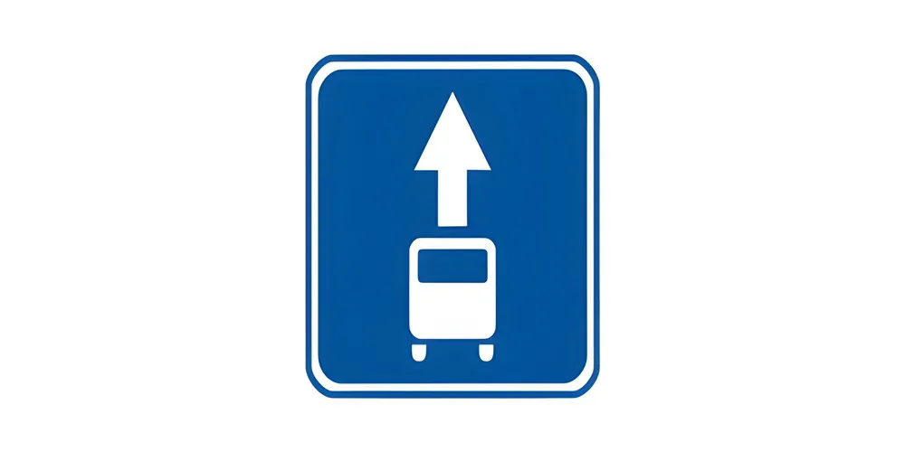
- Permitted.
- Prohibited.
- Permitted if the lane is not separated from the rest of the roadway by a solid pavement marking.
Answer: 3
2.PDF page 1 - g4-q002
This traffic sign indicates:
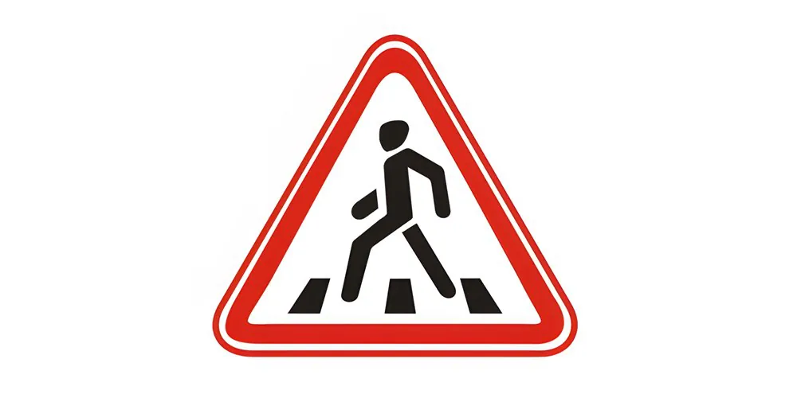
- A section of road where a sidewalk or pedestrian path is present.
- A section of road where a pedestrian crossing is present.
- A section of road where there is no sidewalk or pedestrian path.
Answer: 2
3.PDF page 2 - g4-q003
Which sign prohibits vehicles from proceeding with a distance between them that is less than the distance shown on the sign?
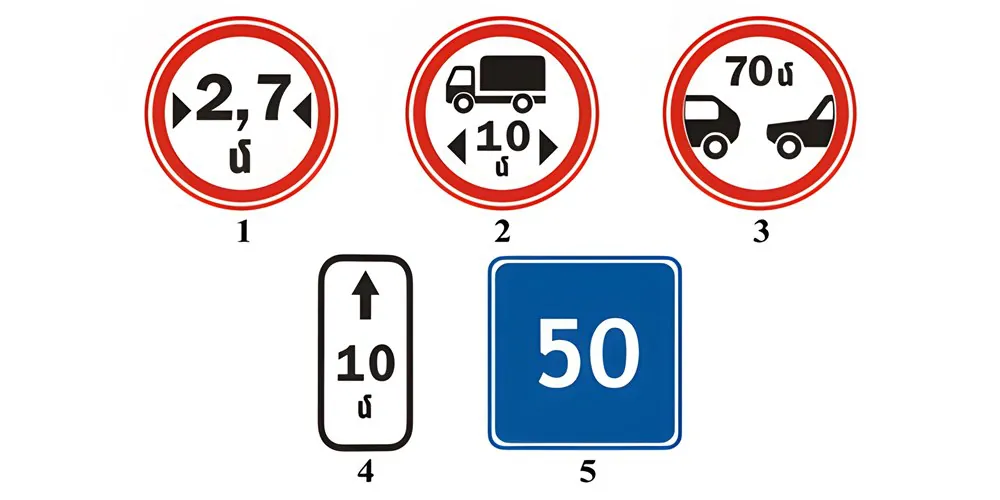
- 1
- 2
- 3
- 4
- 5
Answer: 3
4.PDF page 2 - g4-q004
Within populated areas, how far before a hazardous section of road are these signs installed?
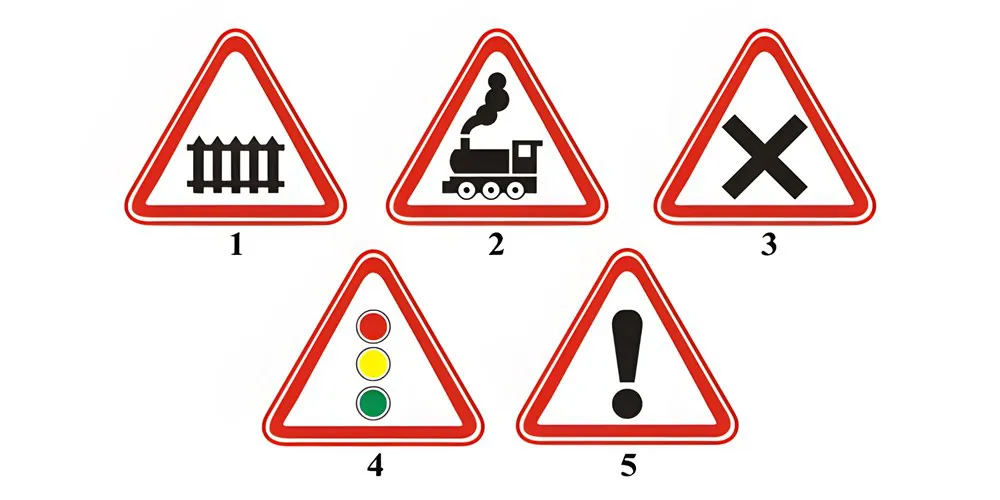
- 15–25 m.
- 25–50 m.
- 50–100 m.
- 100–150 m.
- 150–300 m.
Answer: 3
5.PDF page 3 - g4-q005
This traffic sign:
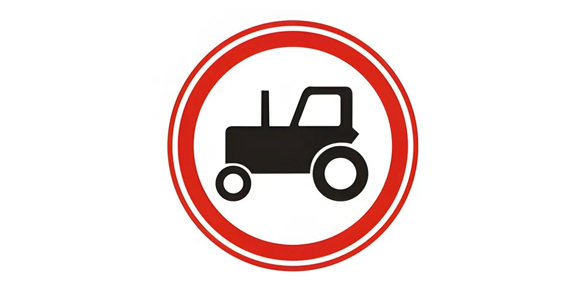
- Prohibits all motor vehicles except two-wheeled motorcycles without sidecars.
- Prohibits all vehicles except wheeled tractors.
- Prohibits tractors and self-propelled machines.
Answer: 3
6.PDF page 3 - g4-q006
Which sign requires a driver to yield to vehicles entering or approaching the narrow section of road from the opposite direction?

- 1
- 2
- 3
- 4
- 5
Answer: 3
7.PDF page 4 - g4-q007
Which sign warns of an approaching intersection of roads of equal priority?
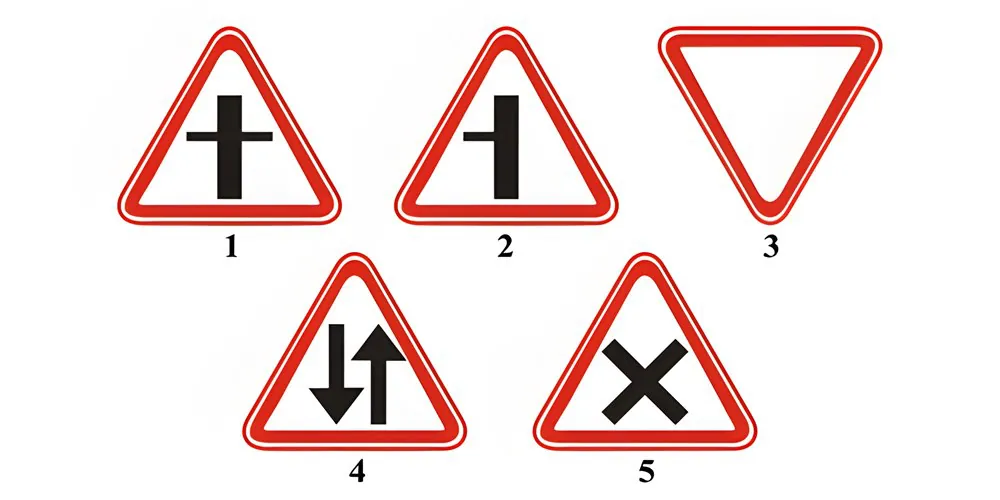
- 1
- 2
- 3
- 4
- 5
Answer: 5
8.PDF page 4 - g4-q008
Which sign is installed immediately before the intersection of roadways?
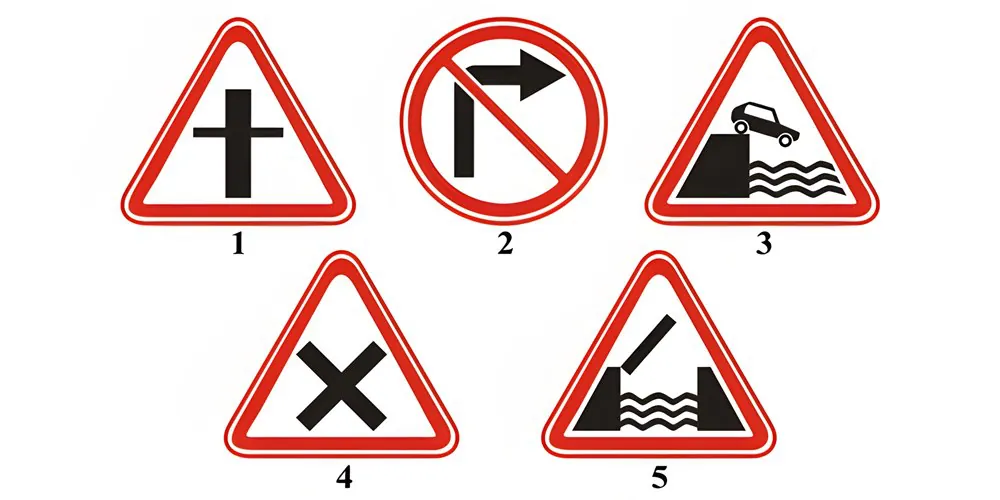
- 1
- 2
- 3
- 4
- 5
Answer: 2
9.PDF page 5 - g4-q009
These signs permit traffic:
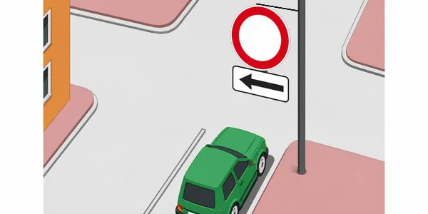
- To the left only.
- Straight ahead only.
- To the right only.
- Straight ahead, to the right, and by making a U-turn.
Answer: 4
10.PDF page 5 - g4-q010
Which sign gives a driver the right-of-way over oncoming vehicles?
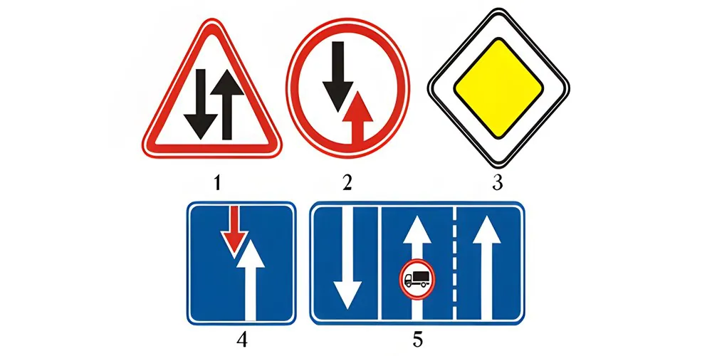
- 1
- 2
- 3
- 4
- 5
Answer: 4
11.PDF page 6 - g4-q011
What does the supplemental plaque below the sign indicate?
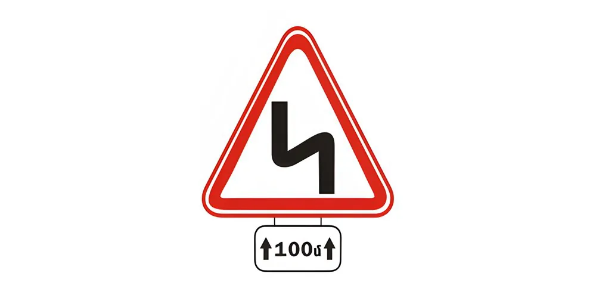
- The distance from the sign to the beginning of the first turn.
- The distance from the first turn to the beginning of the second turn.
- The length of the road section with hazardous turns.
Answer: 3
12.PDF page 6 - g4-q012
What does the following combination of signs indicate?
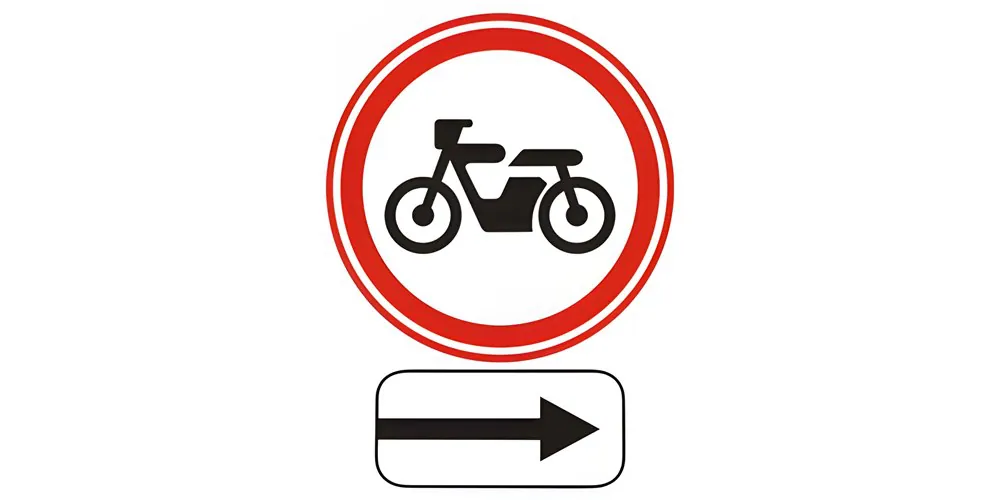
- Motorcycle traffic to the right is prohibited.
- Motorcycle traffic to the right is permitted.
Answer: 1
13.PDF page 7 - g4-q013
Which sign prohibits parking on even-numbered days of the month?
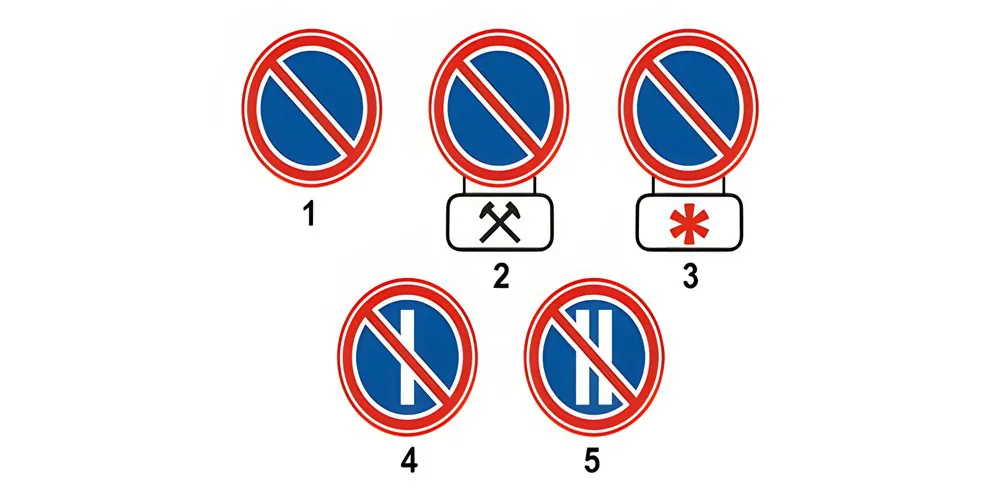
- 1
- 2
- 3
- 4
- 5
Answer: 5
14.PDF page 7 - g4-q014
This traffic sign:
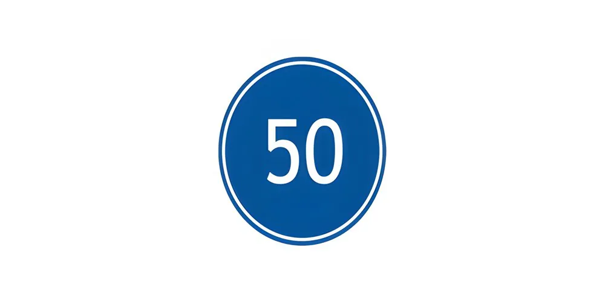
- Permits driving only at the indicated speed or higher.
- Prohibits driving at a speed higher than the speed shown on the sign.
- Indicates the speed recommended for driving on this section of road.
Answer: 1
15.PDF page 8 - g4-q015
Which of the following signs requires a driver to yield to oncoming vehicles?
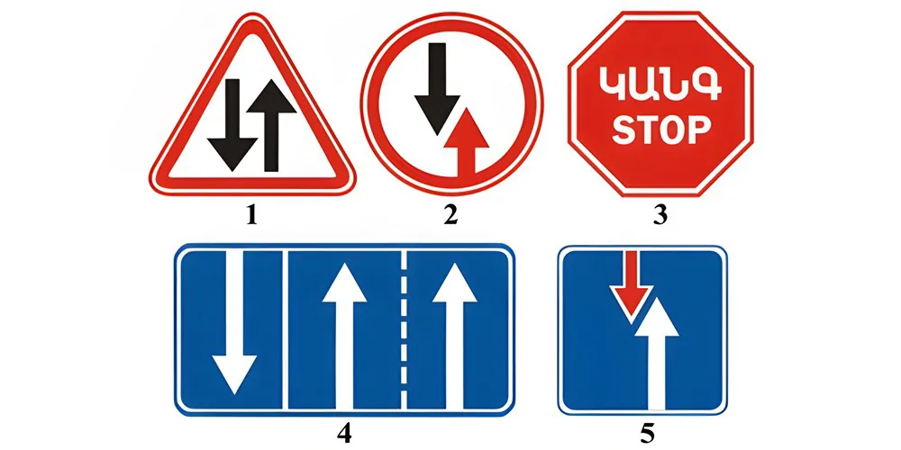
- 1
- 2
- 3
- 4
- 5
Answer: 2
16.PDF page 8 - g4-q016
This sign is called:
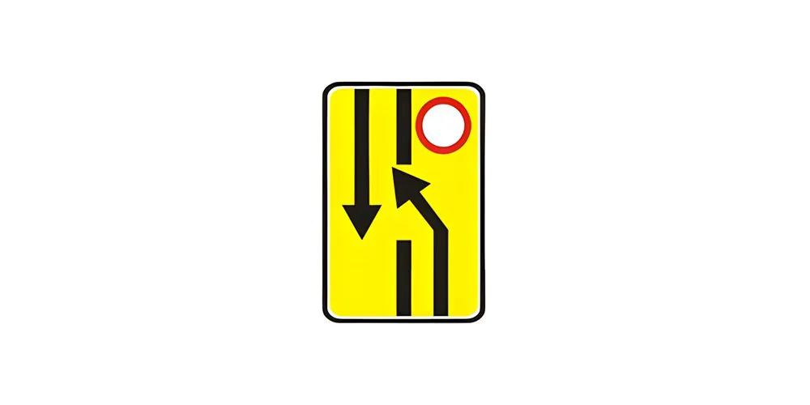
- Advance indication for going around an obstruction.
- Advance indication for changing to another roadway.
- Advance indication for entering the oncoming traffic lane.
Answer: 2
17.PDF page 9 - g4-q017
Which sign requires a driver to yield to vehicles proceeding on the intersecting road?
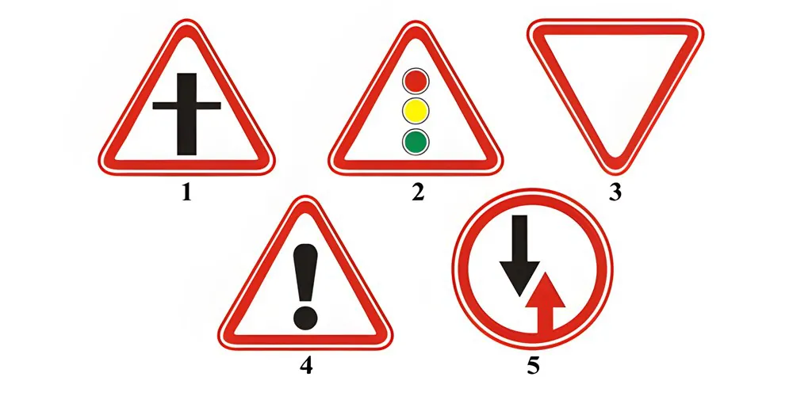
- 1
- 2
- 3
- 4
- 5
Answer: 3
18.PDF page 9 - g4-q018
Which of the following signs permits driving only at the indicated speed or higher (km/h)?

- 1
- 2
- 3
- 4
- 5
Answer: 3
19.PDF page 10 - g4-q019
Which sign indicates a section of one-way road?
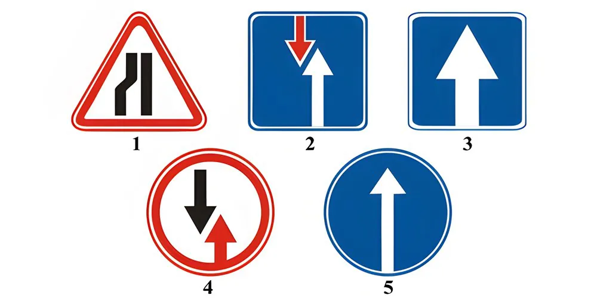
- 1
- 2
- 3
- 4
- 5
Answer: 3
20.PDF page 10 - g4-q020
What does the supplemental plaque used with the main sign indicate?
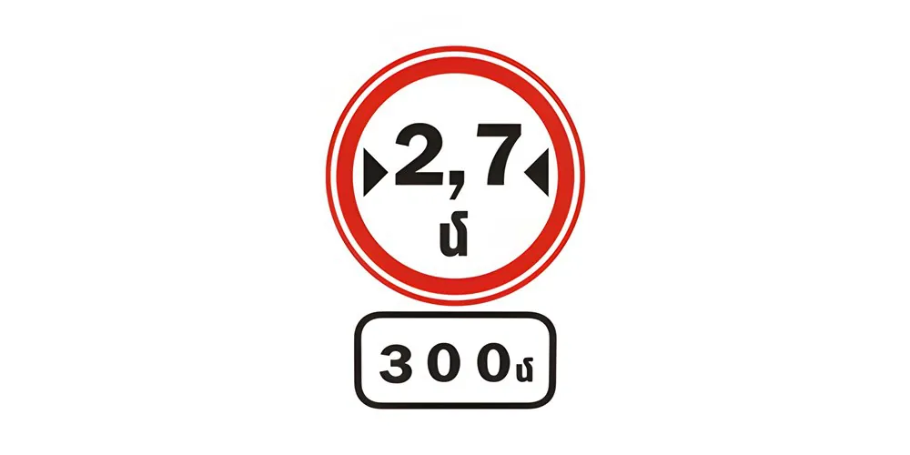
- The length of the narrow section of road.
- The distance from the sign to the location where the restriction begins.
- The distance to the location for going around the narrow section of road.
Answer: 2
21.PDF page 11 - g4-q021
This traffic sign warns that ahead there is:
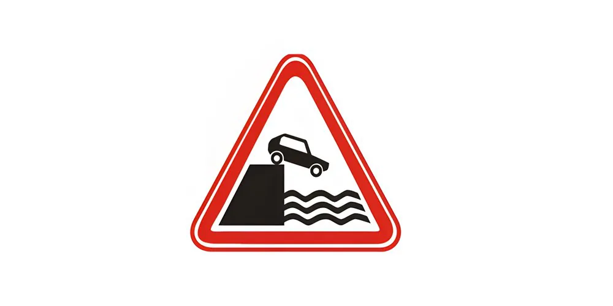
- A road section with a water crossing that has no bridge or ferry.
- A road section crossing water by means of a drawbridge.
- A location where the road reaches a riverbank or shoreline.
Answer: 3
22.PDF page 11 - g4-q022
Which of the following indicates the area of effect of traffic signs prohibiting stopping and parking?

- 1
- 2
- 3
- 4
- 5
Answer: 4
23.PDF page 12 - g4-q023
Which sign indicates the length of a hazardous road section covered by the warning signs?
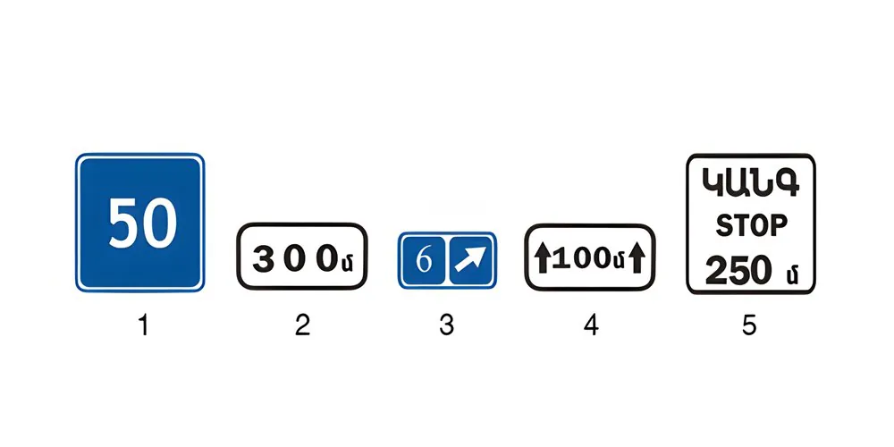
- 1
- 2
- 3
- 4
- 5
Answer: 4
24.PDF page 12 - g4-q024
This traffic sign indicates:
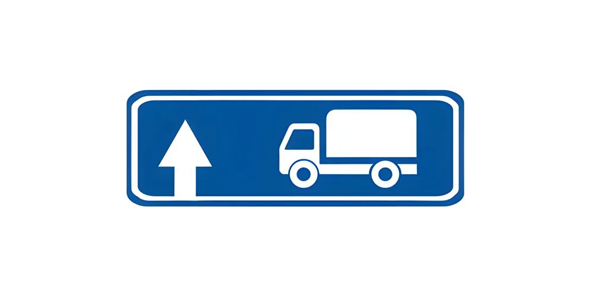
- A one-way road on which only trucks are permitted.
- A lane designated only for trucks.
- The recommended direction of traffic for trucks.
Answer: 3
25.PDF page 13 - g4-q025
Which sign indicates a “Hotel” or “Motel”?
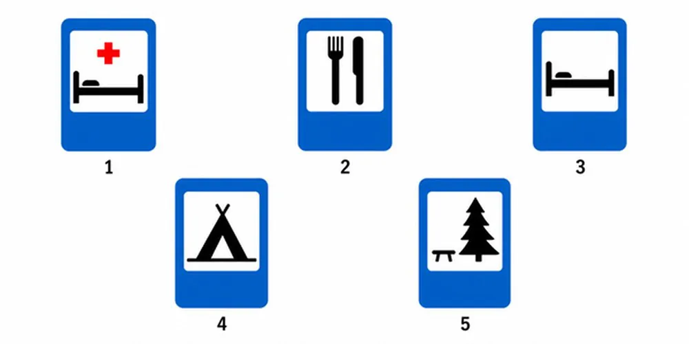
- 1
- 2
- 3
- 4
- 5
Answer: 3
26.PDF page 13 - g4-q026
Vehicles displaying this identification sign are:
- Carrying hazardous cargo.
- Driven by persons with disabilities.
- Driven by deaf or deaf-mute drivers.
- Driven by drivers with less than 3 years of driving experience.
Answer: 3
27.PDF page 14 - g4-q027
Which sign indicates the end of a zone with a maximum speed limit of 50 km/h?
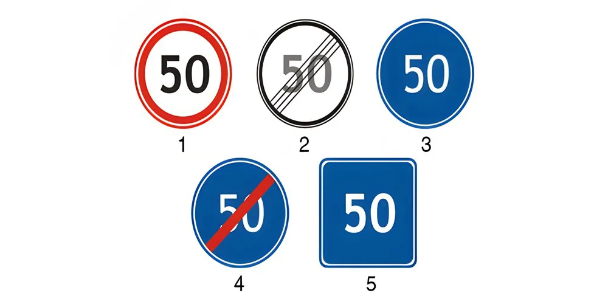
- 1
- 2
- 3
- 4
- 5
Answer: 2
28.PDF page 14 - g4-q028
What do this sign and supplemental plaque warn about?
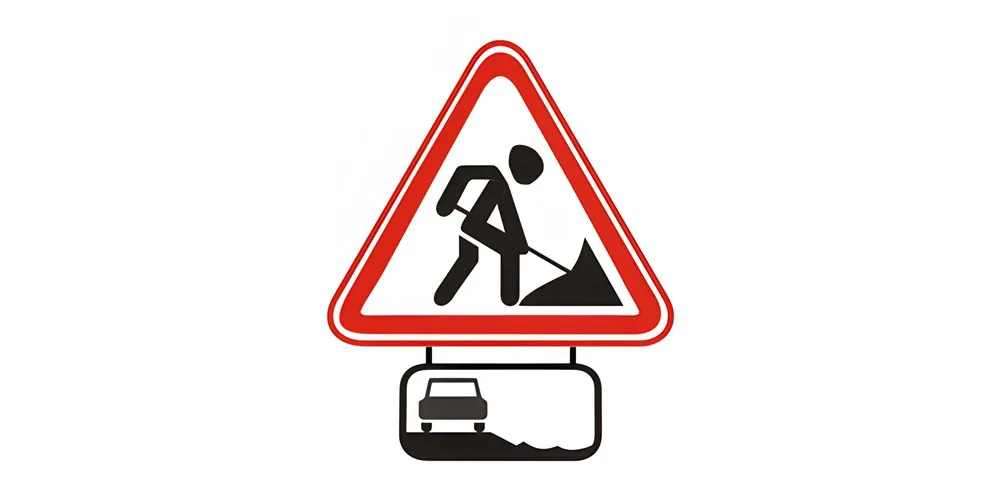
- Stopping on the shoulder is prohibited because of roadwork.
- Entering the shoulder is dangerous because of roadwork.
- Parking on the shoulder is prohibited because of roadwork.
Answer: 2
29.PDF page 15 - g4-q029
Vehicles displaying this identification sign are:
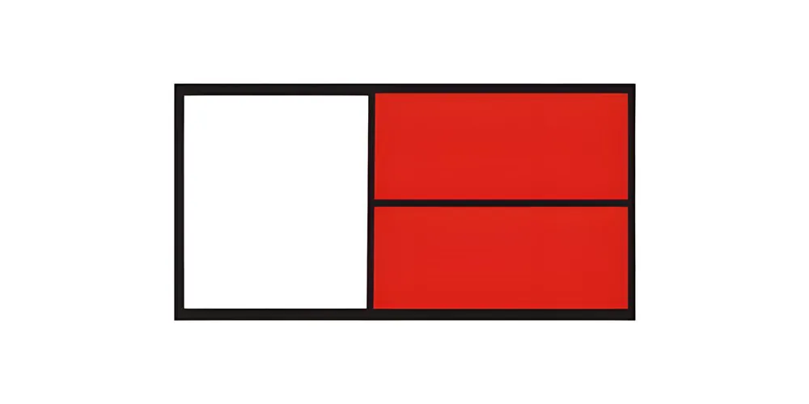
- Driven by persons with disabilities.
- Carrying heavy and oversized cargo.
- Carrying hazardous cargo.
- Driven by deaf or deaf-mute drivers.
Answer: 3
30.PDF page 15 - g4-q030
Which sign cancels all previously imposed restrictions?
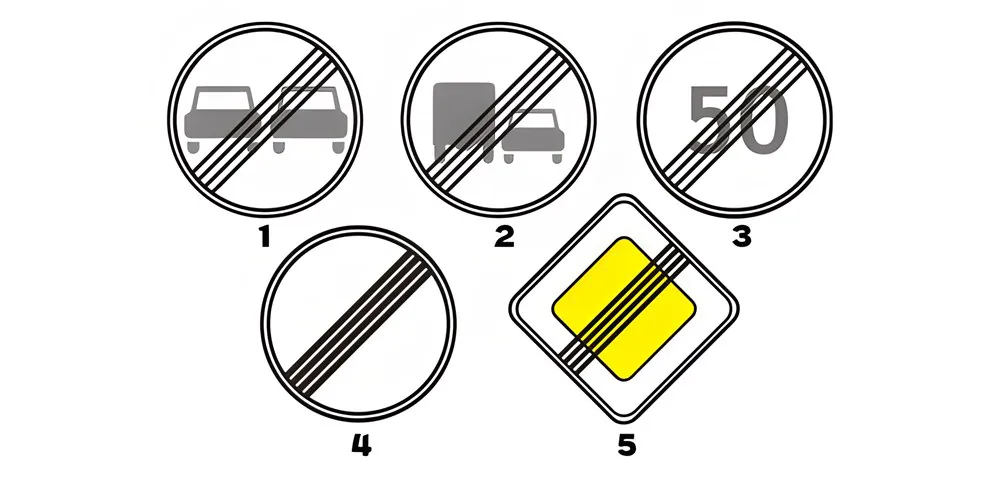
- 1
- 2
- 3
- 4
- 5
Answer: 4
31.PDF page 16 - g4-q031
In which case has the driver correctly complied with the requirements of this sign?
- The driver yielded to motor vehicles proceeding on the intersecting road.
- The driver yielded to vehicles proceeding on the intersecting road.
Answer: 2
32.PDF page 16 - g4-q032
Which of the displayed signs is used as the identification sign for a road train?
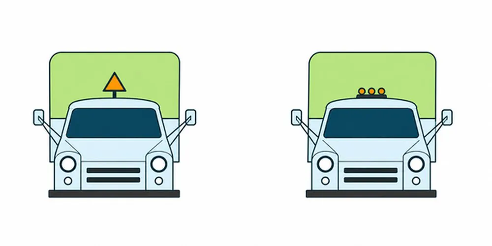
- The sign on the left.
- The sign on the right.
- Both signs.
Answer: 2
33.PDF page 17 - g4-q033
Which sign requires a driver to yield to vehicles proceeding on the intersecting road?
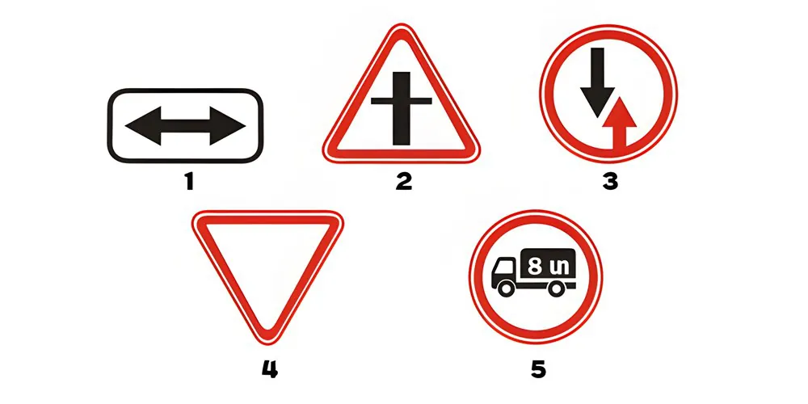
- 1
- 2
- 3
- 4
- 5
Answer: 4
34.PDF page 17 - g4-q034
Which of the following signs (supplemental plaques) indicates how a vehicle must be positioned when parked?
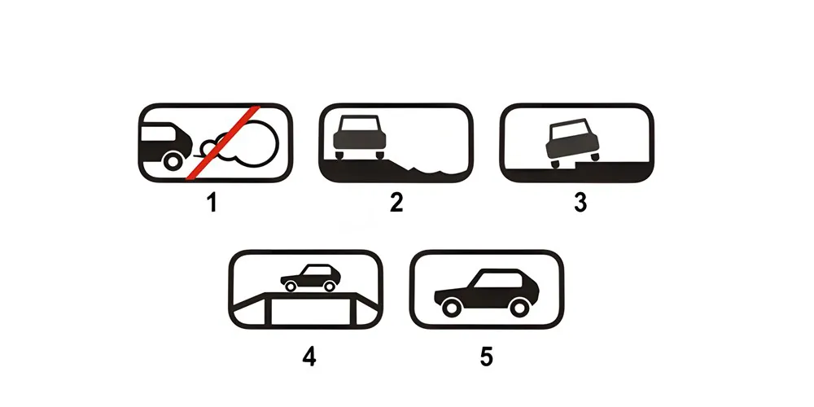
- 1
- 2
- 3
- 4
- 5
Answer: 3
35.PDF page 18 - g4-q035
Is it permitted to stop in the lane indicated by this sign to pick up passengers?
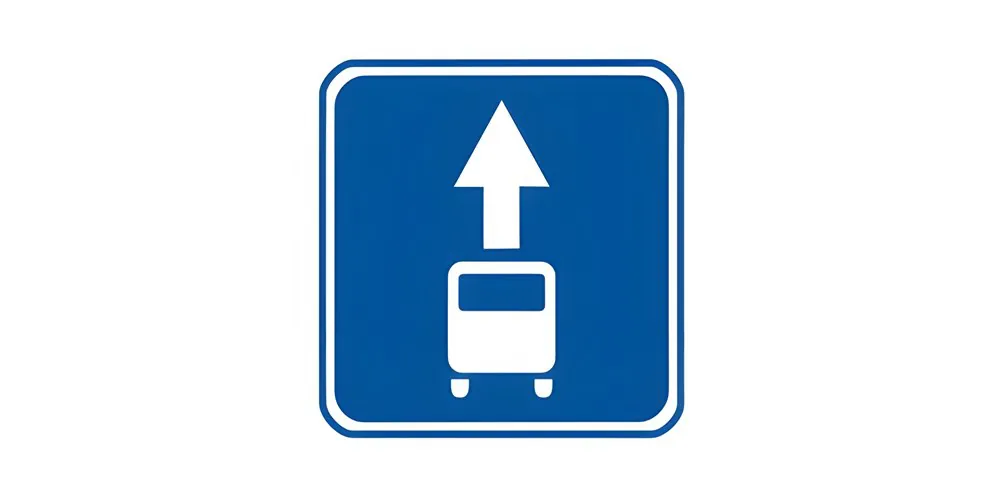
- Permitted if the lane is located along the right edge of the roadway and is not separated from the rest of the roadway by a solid pavement marking.
- Prohibited.
- Permitted.
Answer: 1
36.PDF page 18 - g4-q036
When this traffic sign is present:
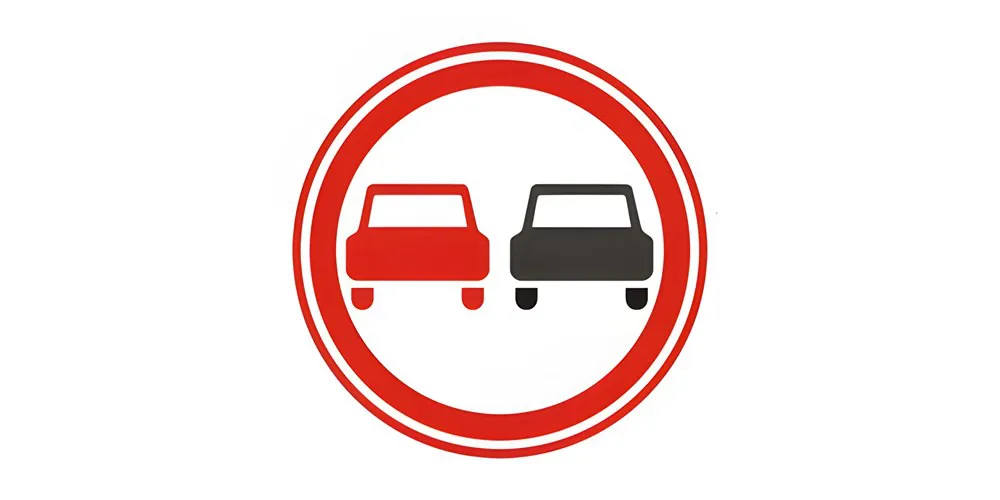
- Passing by all types of vehicles is prohibited, except when passing slow-moving vehicles, animal-drawn carts, two-wheeled motorcycles without sidecars, mopeds, and bicycles.
- Trucks with a maximum authorized mass not exceeding 3.5 metric tons are permitted to pass.
- Passing is permitted if the speed of the passing vehicle does not exceed 30 km/h.
Answer: 1
37.PDF page 19 - g4-q037
Which sign indicates “Intersection with a Bicycle Path”?
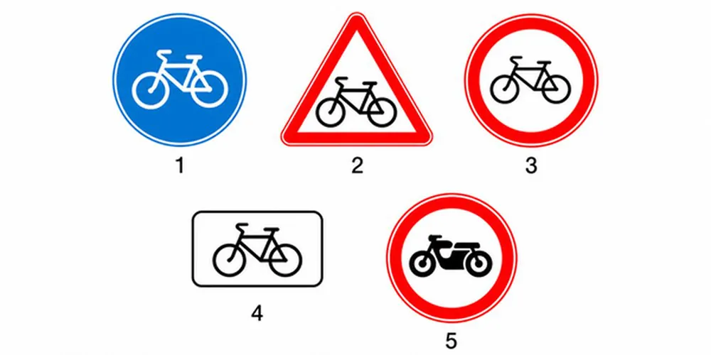
- 1
- 2
- 3
- 4
- 5
Answer: 2
38.PDF page 19 - g4-q038
Which sign indicates the end of the no-passing zone?
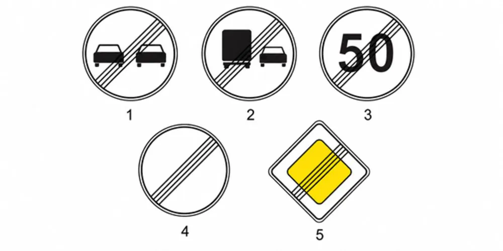
- 1
- 2
- 3
- 4
- 5
Answer: 1
39.PDF page 20 - g4-q039
Which sign indicates the permitted directions of traffic at a T-intersection?
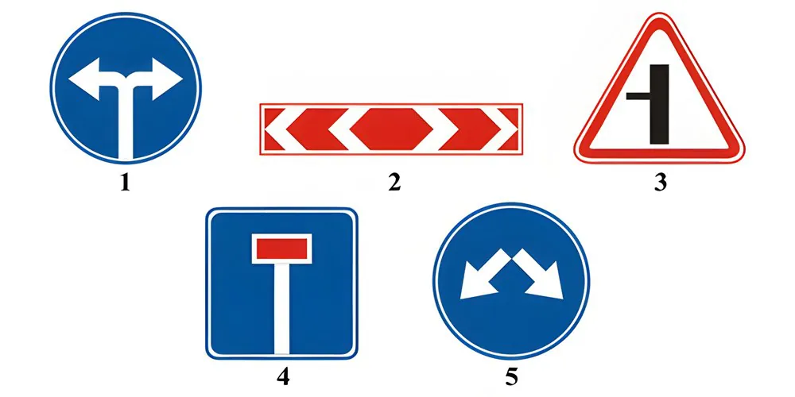
- 1
- 2
- 3
- 4
- 5
Answer: 2
40.PDF page 20 - g4-q040
This traffic sign indicates:
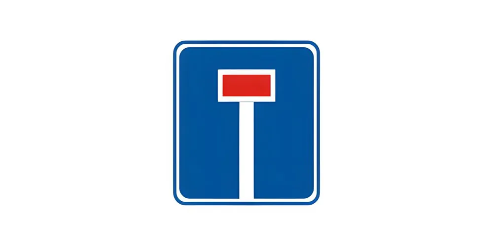
- A dead-end road.
- The direction of traffic toward a destination located within a populated area.
- The end of an acceleration lane or an additional lane on an uphill grade.
Answer: 1
41.PDF page 21 - g4-q041
Which vehicles are permitted within the area where this sign is in effect?
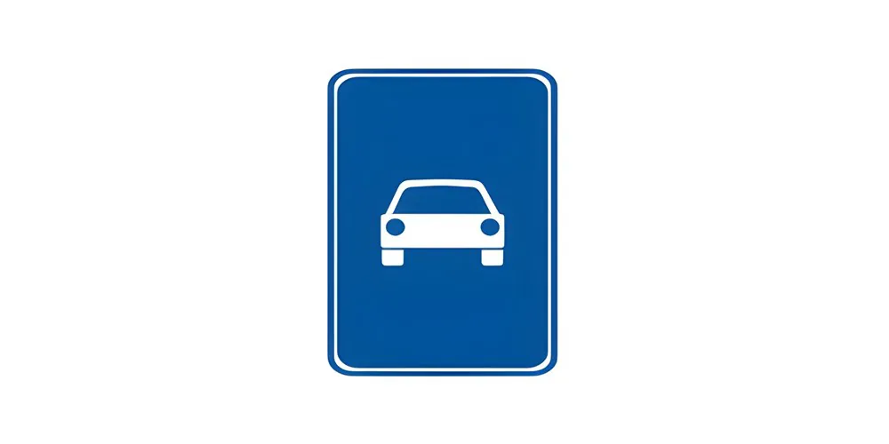
- Motor vehicles.
- All vehicles.
- Automobiles and motorcycles.
- Vehicles whose maximum speed exceeds 40 km/h.
Answer: 3
42.PDF page 21 - g4-q042
Which of these traffic signs is not a prohibitory sign?
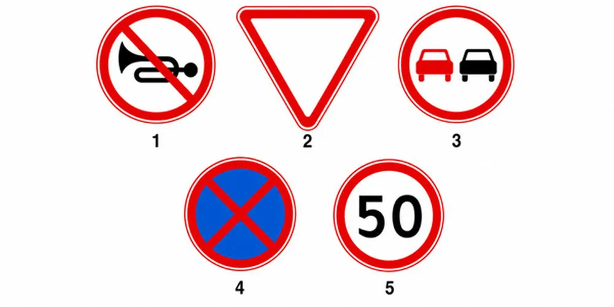
- 1
- 2
- 3
- 4
- 5
Answer: 2
43.PDF page 22 - g4-q043
What does this identification sign indicate?
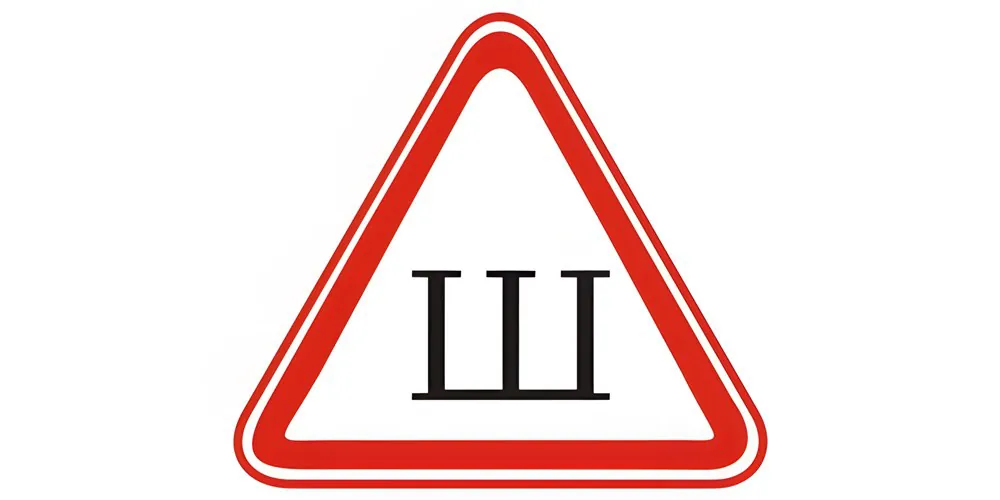
- Ahead is a section of road with an uneven roadway surface.
- Ahead is a section of road with three lanes for traffic in this direction.
- The motor vehicle is equipped with studded tires.
Answer: 3
44.PDF page 22 - g4-q044
Which sign is called “End of One-Way Road”?
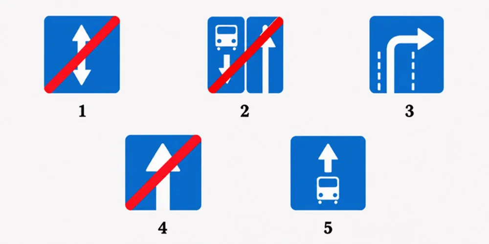
- 1
- 2
- 3
- 4
- 5
Answer: 4
45.PDF page 23 - g4-q045
Which sign requires a driver to yield to vehicles proceeding on the intersecting road?
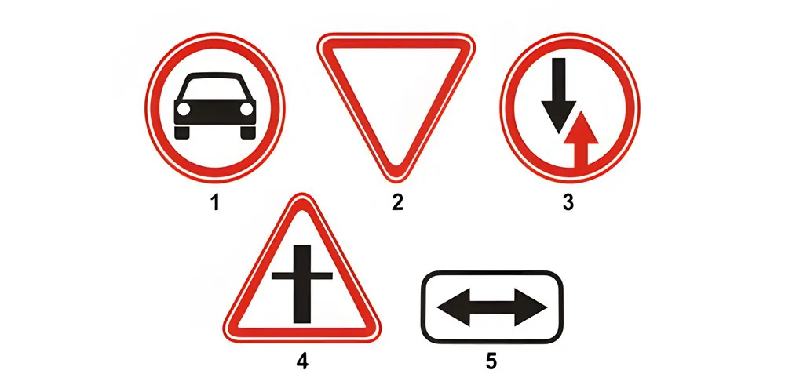
- 1
- 2
- 3
- 4
- 5
Answer: 2
46.PDF page 23 - g4-q046
The following signs indicate:
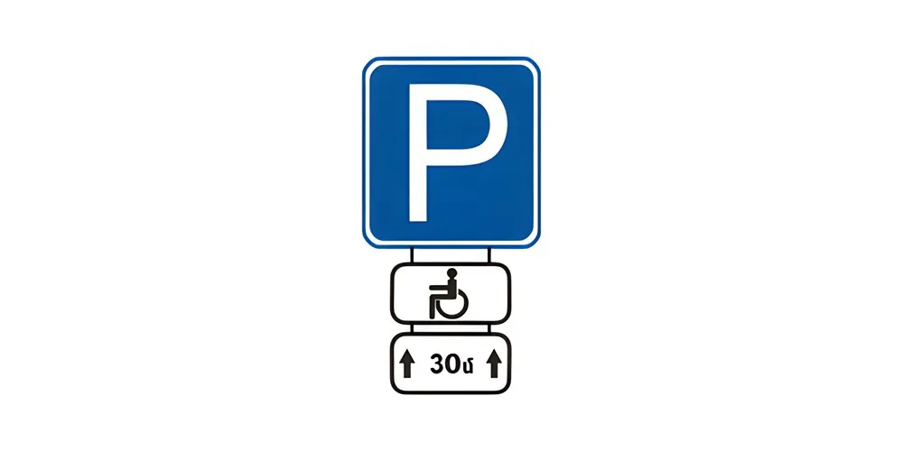
- A parking place 30 meters away for automobiles displaying the “Disabled” identification sign.
- A parking place within a 30-meter-long area for vehicles, except motorized wheelchairs.
- A parking place within a 30-meter-long area for motorized wheelchairs and automobiles displaying the “Disabled” identification sign.
Answer: 3
47.PDF page 24 - g4-q047
Which of these signs is considered a vehicle identification sign?
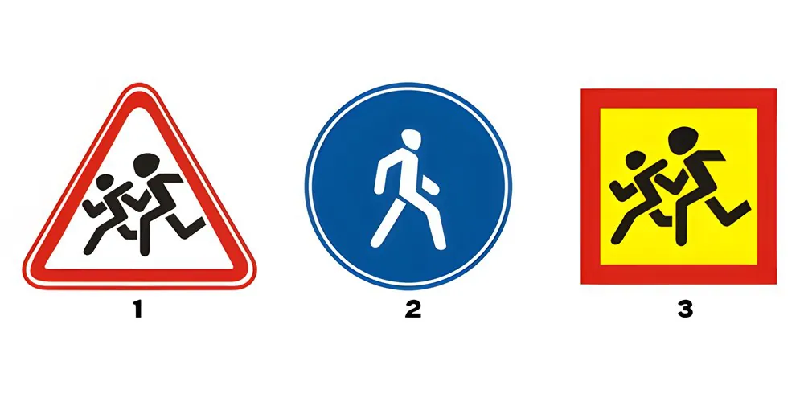
- 1
- 2
- 3
Answer: 3
48.PDF page 24 - g4-q048
Traffic of which vehicles is prohibited by this traffic sign?
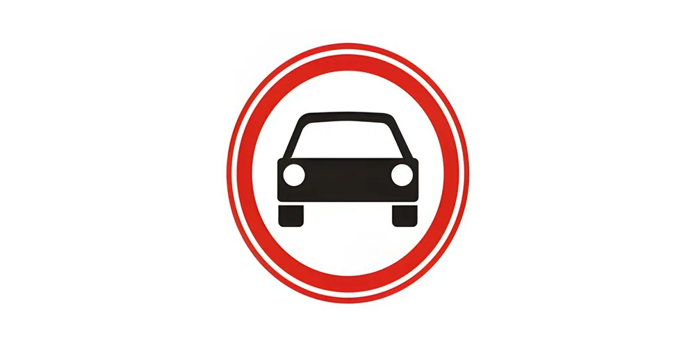
- Motor vehicles.
- Automobiles only.
- Passenger cars only.
Answer: 1
49.PDF page 25 - g4-q049
Which sign indicates that an obstruction may be passed on either the right or the left?
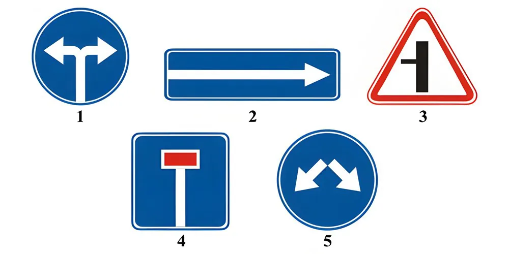
- 1
- 2
- 3
- 4
- 5
Answer: 5
50.PDF page 25 - g4-q050
Which sign is placed on the front and rear of vehicles transporting organized groups of children?
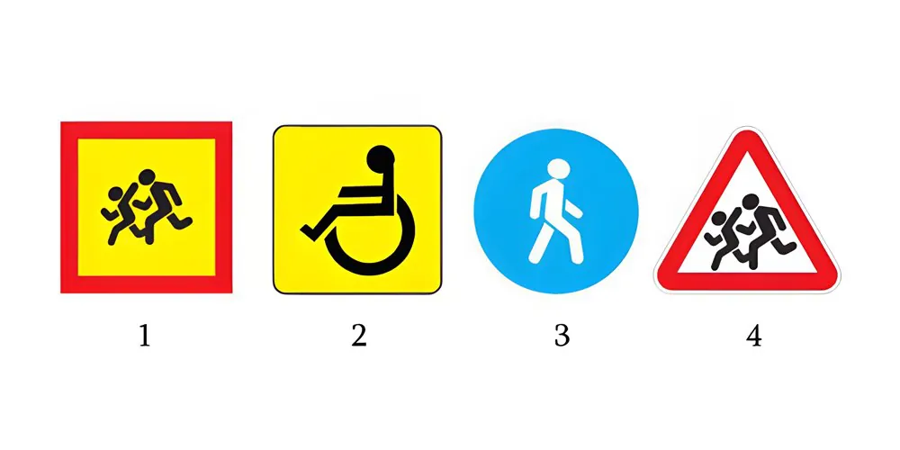
- 1
- 2
- 3
- 4
Answer: 1
51.PDF page 26 - g4-q051
What do the indicated traffic signs show?
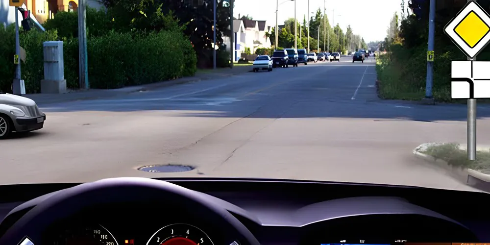
- The priority road continues to the left at the intersection.
- The priority road continues straight ahead and to the left at the intersection.
Answer: 1
52.PDF page 26 - g4-q052
What do the indicated traffic signs show?
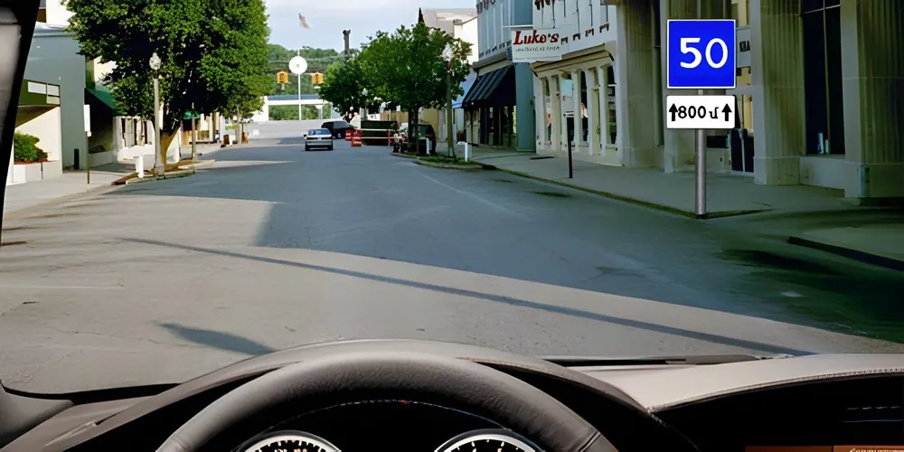
- Within the area of effect of the supplemental plaque, drivers must proceed at a speed higher than the speed shown on the sign.
- Within the area of effect of the supplemental plaque, drivers are advised to proceed at the speed shown on the sign.
Answer: 2
53.PDF page 27 - g4-q053
Which signs apply only during the period when the roadway surface is wet?
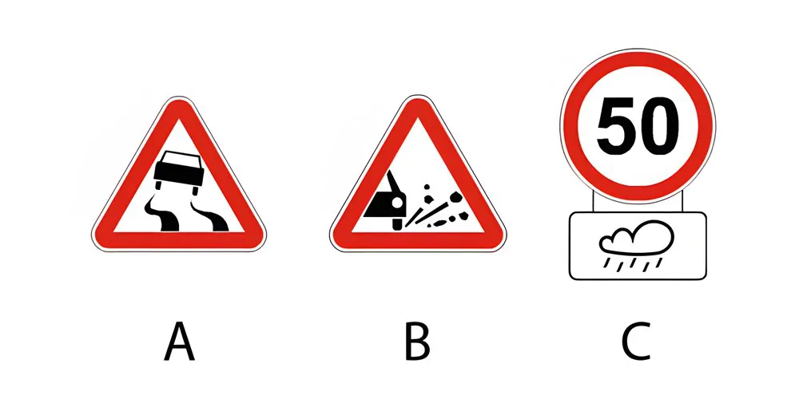
- Only A and C.
- Only B.
- Only C.
- All of them.
Answer: 3
54.PDF page 27 - g4-q054
What should the driver do in this situation?
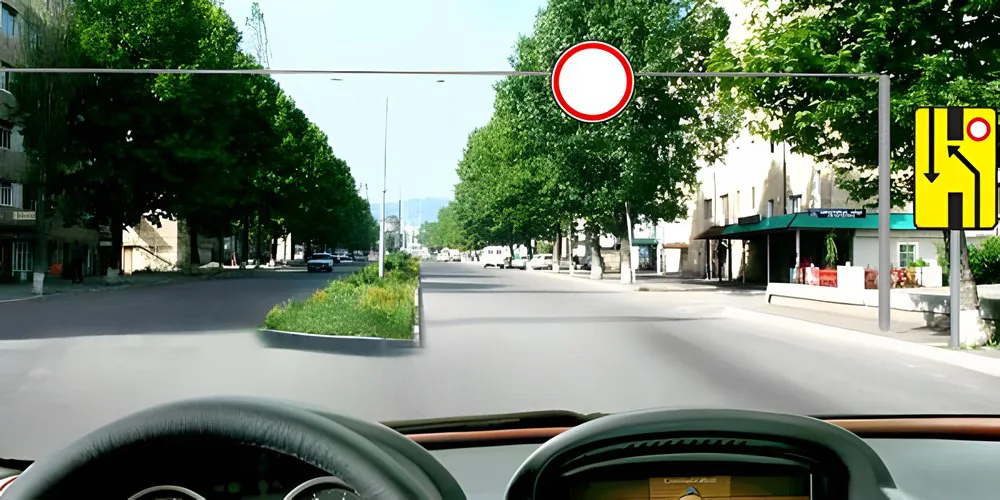
- Continue straight ahead.
- Move into the part of the roadway intended for oncoming traffic.
Answer: 2
55.PDF page 28 - g4-q055
What do the following traffic signs indicate?
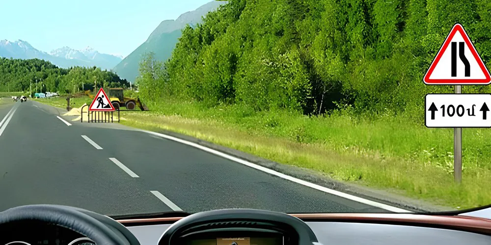
- There is a narrowing of the road from the right 150–300 m beyond the sign, and the narrowed section is 100 m long.
- There is a narrowing of the road from the right 100 m beyond the sign.
Answer: 1
56.PDF page 28 - g4-q056
In which direction is the driver permitted to proceed?
- To the right and left only.
- Straight ahead only.
- Straight ahead and by making a U-turn.
Answer: 3
57.PDF page 29 - g4-q057
What do the indicated traffic signs show?
- Stopping is prohibited on Saturdays.
- Stopping is prohibited on Sundays.
- Stopping is prohibited on Saturdays, Sundays, and holidays.
- Stopping is prohibited during snowfall.
Answer: 3
58.PDF page 29 - g4-q058
Which traffic sign prohibits a U-turn?
- 1
- 2
- 3
Answer: 3
59.PDF page 30 - g4-q059
What do these traffic signs indicate?
- Entering the shoulder is dangerous because of roadwork.
- Roadwork is being carried out on the road.
Answer: 1
60.PDF page 30 - g4-q060
What must the driver do when the following traffic sign is installed before an intersection?
- Proceed through the intersection while maintaining safety.
- Yield to vehicles proceeding on the intersecting road.
- Stop before the sign and yield to vehicles proceeding on the intersecting road.
Answer: 3
61.PDF page 31 - g4-q061
Which traffic signs do not apply to public transit vehicles?
- None of them.
- Only the first.
- Only the fourth.
Answer: 3
62.PDF page 31 - g4-q062
The following traffic sign indicates:
- At the intersection, traffic must proceed to the left or to the right.
- Reversible traffic is established on the intersecting road.
- One-way traffic is established on the intersecting road.
Answer: 2
63.PDF page 32 - g4-q063
In this situation, must the driver yield to the truck?
- Yes.
- No.
Answer: 1
64.PDF page 32 - g4-q064
What do the following traffic signs indicate?
- When the road is icy, traffic must proceed at a speed of 40 km/h.
- When the roadway surface is wet, the maximum permitted speed is 40 km/h.
Answer: 2
65.PDF page 33 - g4-q065
What do the following traffic signs indicate?
- Stopping is prohibited on Saturdays.
- Stopping is prohibited on Sundays.
- Stopping is prohibited on weekdays.
Answer: 3
66.PDF page 33 - g4-q066
What do the following traffic signs indicate?
- On this section of road, the maximum permitted speed is 50 km/h.
- A speed of 50 km/h is recommended on this section of road.
- Driving is permitted only at the speed indicated on the sign or higher.
Answer: 2
67.PDF page 34 - g4-q067
Which traffic sign requires a driver to proceed only to the left or to the right?
- 1
- 2
- 3
Answer: 3
68.PDF page 34 - g4-q068
What do the following traffic signs indicate?
- When the roadway surface is wet, a speed of 40 km/h is recommended.
- When the roadway surface is wet, the maximum permitted speed is 40 km/h.
Answer: 1
69.PDF page 35 - g4-q069
The effect of these traffic signs applies:
- On the left side of the road.
- On the right side of the road.
- On the side of the road where they are installed.
Answer: 3
70.PDF page 35 - g4-q070
In this situation, along which path or paths is it permitted to go around the obstruction?
- Only A.
- Only B.
- A and B.
Answer: 3
71.PDF page 36 - g4-q071
What should the driver do in this situation?
- Stop at the first sign.
- Stop before the second sign.
- Stop at least 5 meters before the first railroad track.
Answer: 2
72.PDF page 36 - g4-q072
What should the driver do if intending to make a right turn at the intersection?
- The driver may change into the right traffic lane and then make the right turn.
- The driver may approach the intersection and then make the right turn.
- Both answers are correct.
Answer: 3
73.PDF page 37 - g4-q073
In this situation, at a distance of 200 m from the sign, is the driver permitted to make a U-turn?
- Yes.
- No.
Answer: 1
74.PDF page 37 - g4-q074
In this case, must the driver stop at the location indicated by the traffic controller?
- No, because the sign prohibits stopping.
- Yes.
Answer: 2
75.PDF page 38 - g4-q075
What should the driver do in this situation?
- Proceed through the railroad crossing while ensuring safety.
- Proceed through the railroad crossing without stopping.
- Stop before the sign and then, while ensuring safety, proceed through the multiple-track railroad crossing.
Answer: 3
76.PDF page 38 - g4-q076
What does the pavement marking on the roadway indicate?
- The boundaries of lanes designated for vehicles proceeding in the same direction.
- The boundaries of a reversible traffic lane.
Answer: 2
77.PDF page 39 - g4-q077
In which direction or directions is the passenger car permitted to proceed?
- To the left and by making a U-turn.
- In any direction.
- Straight ahead, to the left, and by making a U-turn.
Answer: 3
78.PDF page 39 - g4-q078
What should the driver do in this situation?
- If necessary, yield to a vehicle proceeding on the intersecting road.
- Stop and yield to a vehicle proceeding on the intersecting road.
Answer: 2
79.PDF page 40 - g4-q079
Outside populated areas, at what distance before the beginning of a hazardous section is this warning sign installed?
- 50–100 m.
- 150–300 m.
- 300–500 m.
Answer: 2
80.PDF page 40 - g4-q080
In which direction is traffic permitted?
- Straight ahead only.
- Straight ahead and to the right.
- Straight ahead, to the right, and to the left.
- In all directions.
Answer: 3
81.PDF page 41 - g4-q081
Which of the following traffic signs prohibits entering an intersection area if congestion has formed ahead in the direction of traffic, except when making a right or left turn?
- 1
- 2
- 3
- 4
Answer: 3
82.PDF page 41 - g4-q082
At what maximum distance may the “Intersection Area” traffic sign be installed at a complex intersection if it cannot be installed at the boundary of the intersection?
- 10 m.
- 20 m.
- 30 m.
Answer: 3
83.PDF page 42 - g4-q083
What does the following traffic sign warn about?
same image object is also used by question 82

- Stopping is prohibited.
- Entering the intersection area is prohibited if congestion has formed ahead in the direction of traffic and would force the driver to stop.
- Entering the intersection area is prohibited if congestion has formed ahead in the direction of traffic.
Answer: 2
84.PDF page 42 - g4-q084
What does the following pavement marking indicate?
- A vehicle parking area.
- A pedestrian crossing.
- A safety island.
- A section of an intersection that may not be entered if congestion has formed ahead in the direction of traffic and would force the driver to stop.
Answer: 4
85.PDF page 43 - g4-q085
Which of the following pavement markings indicates a section of an intersection that may not be entered if congestion has formed ahead in the direction of traffic and would force the driver to stop?
- 1
- 2
- 3
Answer: 3
86.PDF page 43 - g4-q086
Making a U-turn from the indicated lane is:
- Permitted.
- Prohibited.
Answer: 2
87.PDF page 43 - g4-q087
Along which path is it permitted to make a U-turn?
- Only A.
- Only B.
- Prohibited along both paths.
Answer: 1
88.PDF page 44 - g4-q088
Along which path is it permitted to make a U-turn?
- Only A.
- Only B.
- Neither path.
Answer: 3
89.PDF page 44 - g4-q089
Which vehicle driver may continue straight ahead through this intersection?
- The public transit vehicle driver.
- The motorcycle operator.
- The bicyclist.
Answer: 1
90.PDF page 44 - g4-q090
Along which path is a U-turn permitted?
- At the intersection, along path A.
- Before the intersection, along path B.
- Permitted along both paths.
- Prohibited along both paths.
Answer: 1
91.PDF page 45 - g4-q091
Must you stop before the “Stop Line”?
- Yes.
- No.
Answer: 2
92.PDF page 45 - g4-q092
Traffic is permitted:
- Only in direction B.
- Only in directions A or B.
- In any direction.
Answer: 2
93.PDF page 45 - g4-q093
This traffic sign indicates:
- The distance from the end of the tunnel.
- The distance from a location hazardous to children.
- The location of an emergency exit and the distance to it.
Answer: 3
94.PDF page 46 - g4-q094
In this situation:
- We must yield to the truck driver.
- We may proceed through the narrow section first.
Answer: 2
95.PDF page 46 - g4-q095
After these signs, the driver of a truck with a maximum authorized mass not exceeding 3.5 metric tons may proceed at a maximum speed of:
- 60 km/h.
- 70 km/h.
- 80 km/h.
Answer: 3
96.PDF page 46 - g4-q096
What is prohibited by this traffic sign?
- Proceeding at a speed greater than 20 km/h.
- Traffic of motor vehicles.
- Traffic of all vehicles.
Answer: 3
97.PDF page 47 - g4-q097
Where must the driver stop in order to comply with the sign?
- Before the sign (A).
- Before the intersection (B).
- Before the intersection of the roadways (C).
Answer: 3
98.PDF page 47 - g4-q098
Which sign limits speed?
- 1 and 3.
- 1 and 4.
- Only 2.
- 2 and 3.
Answer: 3
99.PDF page 47 - g4-q099
Which sign applies only to the lane above which it is installed?
- Only A.
- Only B.
- A and B.
Answer: 1
100.PDF page 48 - g4-q100
Parking at the indicated location is:
- Permitted.
- Permitted only during daylight hours.
- Prohibited.
Answer: 1
101.PDF page 48 - g4-q101
Has the truck driver violated the parking rules?
- Yes.
- Yes, if the maximum authorized mass exceeds 3.5 metric tons.
- No.
Answer: 1
102.PDF page 48 - g4-q102
In which direction is traffic permitted?
- Straight ahead only.
- Straight ahead and by making a U-turn.
- In all directions.
Answer: 2
103.PDF page 49 - g4-q103
Which sign does not apply to you if you reside within the area where the sign is in effect?
- Only A.
- Only B.
- Only A and C.
- Only C.
- All of them.
Answer: 3
104.PDF page 49 - g4-q104
What does the supplemental plaque indicate?
- The distance from the sign to the intersection when a “Yield” sign is installed immediately before the intersection.
- The distance from the sign to the intersection when a “STOP” sign is installed immediately before the intersection.
- The location of a border checkpoint.
Answer: 2
105.PDF page 49 - g4-q105
Stopping at the indicated location is:
- Permitted.
- Prohibited.
Answer: 1
106.PDF page 50 - g4-q106
Which signs remain in effect in the direction of traffic up to the nearest intersection?
- A and C.
- B and D.
- C and D.
Answer: 2
107.PDF page 50 - g4-q107
What speed regulation is established on the road by these signs?
- Minimum speed: 50 km/h.
- Recommended speed: 50 km/h.
- Minimum speed in the left lane proceeding in the same direction: 50 km/h.
Answer: 3
108.PDF page 50 - g4-q108
Which of the signs prohibits making a left turn?
- Only A.
- Only A and B.
- Only A and C.
- All of them.
Answer: 3
109.PDF page 51 - g4-q109
Is the driver permitted to make a left turn?
- Yes.
- No.
Answer: 1
110.PDF page 51 - g4-q110
The signs indicate that:
- Within a 150 m section of road, there is a danger of pedestrians entering the roadway.
- There is an uncontrolled pedestrian crossing 150 m ahead.
Answer: 2
111.PDF page 51 - g4-q111
Along which paths is traffic permitted?
- Only B.
- A or B.
- B or C.
Answer: 1
112.PDF page 52 - g4-q112
Which of the signs prohibits proceeding at a speed below 40 km/h?
- Only A.
- Only C.
- A and B.
Answer: 3
113.PDF page 52 - g4-q113
With which sign must you yield to oncoming traffic at a narrow section?
- Only C.
- A and C.
- B and C.
Answer: 2
114.PDF page 52 - g4-q114
In which direction or directions may you continue through this intersection if you are driving a truck with a maximum authorized mass of 3.5 metric tons?
- To the left only.
- To the right, to the left, or by making a U-turn.
- In any direction.
Answer: 3
115.PDF page 53 - g4-q115
Is a right turn onto the unpaved road permitted?
- Yes.
- No.
Answer: 1
116.PDF page 53 - g4-q116
Is stopping at the indicated location to pick up a passenger permitted?
- Yes.
- No.
Answer: 1
117.PDF page 53 - g4-q117
Which sign indicates a pedestrian path?
- B.
- B and C.
- All of them.
Answer: 1
118.PDF page 54 - g4-q118
This traffic sign:
- Warns of an approaching narrow section.
- Prohibits crossing the bridge.
- Requires the driver to yield to oncoming traffic at narrow sections.
Answer: 3
119.PDF page 54 - g4-q119
What should you do if you need to reverse your direction of movement?
- Make a U-turn at this intersection.
- Proceed straight through the intersection and then make a U-turn.
- Both options are permitted.
Answer: 2
120.PDF page 54 - g4-q120
Parking at the indicated location is:
- Permitted.
- Prohibited.
Answer: 2
121.PDF page 55 - g4-q121
When this supplemental plaque is used, the sign with which it is used applies to:
- Passenger cars only.
- Passenger cars and trucks with a maximum authorized mass not exceeding 3.5 metric tons.
- Passenger cars and motorcycles.
Answer: 2
122.PDF page 55 - g4-q122
This traffic sign indicates that:
- Stopping on the shoulder is prohibited.
- Entering the shoulder is dangerous because of roadwork.
- Stopping is permitted only on the roadway.
Answer: 2
123.PDF page 55 - g4-q123
In which direction or directions is traffic permitted from the indicated lane?
- To the left only.
- Straight ahead and to the left.
- Straight ahead, to the left, and by making a U-turn.
Answer: 3
124.PDF page 56 - g4-q124
In which of the indicated directions may you continue through this intersection?
- Only A.
- B and C.
- A and B.
Answer: 3
125.PDF page 56 - g4-q125
This traffic sign:
- Recommends proceeding at a speed of 40 km/h.
- Permits proceeding only at a speed of 40 km/h or higher.
- Prohibits proceeding at a speed higher than 40 km/h.
Answer: 3
126.PDF page 56 - g4-q126
Which supplemental plaques indicate the area of effect of the sign with which they are used?
- Only A.
- Only B.
- B and C.
Answer: 3
127.PDF page 57 - g4-q127
Which yard is the driver permitted to enter?
- The left yard.
- The right yard.
- Neither yard.
- Both yards.
Answer: 2
128.PDF page 57 - g4-q128
Which sign takes effect immediately from the location where it is installed?
- Only A and B.
- Only B.
- All of them.
Answer: 1
129.PDF page 57 - g4-q129
Along which path is it permitted to continue?
- Only A.
- Only A or C.
- Only A or D.
- Any path except B.
Answer: 4
130.PDF page 58 - g4-q130
What does this traffic sign warn about?
- An approaching slippery section of road.
- An approaching wet and dirty section of road.
- An approaching section of road where loose gravel may be thrown up by vehicle tires.
Answer: 3
131.PDF page 58 - g4-q131
Within the area of effect of which sign do the traffic rules applicable in populated areas not apply?
- Only A.
- Only C.
- B and C.
Answer: 2
132.PDF page 58 - g4-q132
In which direction or directions is the passenger-car driver permitted to proceed in this situation?
- Straight ahead only.
- Straight ahead and to the right.
- In any direction.
Answer: 3
133.PDF page 59 - g4-q133
Unloading an automobile within the area where this traffic sign is in effect is:
- Permitted if it takes no more than 5 minutes.
- Permitted regardless of duration.
- Prohibited.
Answer: 2
134.PDF page 59 - g4-q134
Which of the signs prohibits a U-turn?
- Only A.
- Only A and C.
- None of them.
Answer: 3
135.PDF page 59 - g4-q135
Is it permitted to enter the indicated yard?
- Yes.
- No.
Answer: 1
136.PDF page 60 - g4-q136
In this situation, stopping to pick up a passenger is:
- Permitted after the sign.
- Permitted before the sign.
- Prohibited in both cases.
Answer: 3
137.PDF page 60 - g4-q137
After which signs is proceeding prohibited without permission?
- Only A and D.
- Only B and C.
- Only D and C.
- All of them.
Answer: 2
138.PDF page 60 - g4-q138
What is the minimum distance from the location of this sign at which an intersection of roads of equal priority may be encountered?
- 100 m.
- 150 m.
- 50 m.
Answer: 3
139.PDF page 61 - g4-q139
In which of the directions indicated by the arrows may towing continue?
- Only A.
- Only B.
- In both directions.
Answer: 1
140.PDF page 61 - g4-q140
From what point do the requirements regulating traffic in a populated area take effect?
(no picture)
- After the “Beginning of Populated Area” sign with a white background.
- Only after signs with a white or blue background that contain the name of the populated area.
- Only after the beginning of the developed area.
Answer: 1
141.PDF page 61 - g4-q141
This traffic sign:
- Warns of an intersection with tram tracks.
- Warns of an approaching tram stop.
- Requires yielding to the tram operator.
Answer: 1
142.PDF page 62 - g4-q142
These signs require you to maintain between your vehicle and the vehicle ahead:
- A distance of up to 70 m over a 900 m section of road.
- A distance of at least 70 m over a 900 m section of road.
- A distance of 70 m after proceeding 900 m.
Answer: 2
143.PDF page 62 - g4-q143
In which direction or directions may you continue from the indicated lane?
- Straight ahead only.
- To the left and straight ahead.
- To the left, straight ahead, and by making a U-turn.
Answer: 2
144.PDF page 62 - g4-q144
These signs warn that:
- There is a three-track railroad crossing ahead.
- There is a railroad crossing without a barrier gate 150–300 m ahead.
- There is a railroad crossing 50–100 m ahead.
Answer: 2
145.PDF page 63 - g4-q145
Is parking permitted at the indicated location?
- Yes.
- Permitted only for residents of the indicated area.
- No.
Answer: 1
146.PDF page 63 - g4-q146
Which sign requires the driver of a 5-metric-ton truck to make a right turn at the intersection?
- Only A.
- Only B.
- A and B.
- B and C.
Answer: 2
147.PDF page 63 - g4-q147
In which direction or directions may you continue through the indicated intersection if you are driving a truck with a maximum authorized mass of 3 metric tons?
- Straight ahead only.
- Straight ahead and to the right only.
- In any direction.
Answer: 3
148.PDF page 64 - g4-q148
In this situation, the horn may be used:
- Only to warn of an intention to pass.
- Only when necessary to prevent a traffic accident.
- In both of the listed cases.
Answer: 2
149.PDF page 64 - g4-q149
Which sign is used to mark a speed hump?
- Only A.
- Only B.
- B and C.
Answer: 1
150.PDF page 64 - g4-q150
Along which path may you continue?
- Only A.
- Only B.
- Along both indicated paths.
Answer: 1
151.PDF page 65 - g4-q151
At an uncontrolled intersection, which signs give the driver the right-of-way over vehicles proceeding on the intersecting road?
- Only A.
- A and C.
- All of them.
Answer: 2
152.PDF page 65 - g4-q152
Is passing permitted in this situation?
- Yes.
- Yes, if the motorcycle is proceeding at a speed below 30 km/h.
- No.
Answer: 1
153.PDF page 65 - g4-q153
Has the truck driver violated the parking rules?
- No.
- Yes, if the maximum authorized mass exceeds 3.5 metric tons.
- Yes.
Answer: 3
154.PDF page 66 - g4-q154
Along which path is the U-turn permitted?
- Only A.
- Only B.
- Any of the paths.
Answer: 2
155.PDF page 66 - g4-q155
On odd-numbered dates of the month, is parking permitted at the indicated location?
- Yes.
- Yes, after 7:00 PM.
- No.
Answer: 2
156.PDF page 66 - g4-q156
Which signs indicate the section where drivers must yield to pedestrians crossing the roadway?
- Only A and B.
- Only B and C.
- All of them.
Answer: 2
157.PDF page 67 - g4-q157
Which sign warns that you are approaching the beginning of a road with two-way traffic?
- Only A.
- Only A and B.
- All of them.
Answer: 1
158.PDF page 67 - g4-q158
Are you permitted to enter your workplace located within the area where these signs are in effect?
- Permitted only on working days.
- Permitted only on non-working days.
- Permitted on all days.
- Prohibited.
Answer: 3
159.PDF page 67 - g4-q159
Is a passenger car towing a trailer permitted to proceed straight ahead through the intersection?
- Yes.
- Permitted only for persons residing within the area where the sign is in effect.
- No.
Answer: 1
160.PDF page 68 - g4-q160
In which of the indicated directions is traffic permitted?
- Only B.
- Only A and B.
- Only B and C.
- All of them.
Answer: 4
161.PDF page 68 - g4-q161
This sign:
- Indicates the directions of traffic at the intersection.
- Prohibits proceeding through the intersection.
Answer: 1
162.PDF page 68 - g4-q162
Which sign indicates the length of the lane provided for making a U-turn?
- A.
- B.
- A and B.
Answer: 2
163.PDF page 69 - g4-q163
At what minimum distance from the sign will a slippery section of road begin in a populated area?
- At least 100 m.
- At least 50 m.
- Immediately after the sign.
Answer: 2
164.PDF page 69 - g4-q164
Which vehicles are not subject to the “No Stopping” sign in this situation?
- Passenger-car taxis.
- Only motorized wheelchairs and automobiles displaying the “Disabled” identification sign.
- All of the listed vehicles.
Answer: 2
165.PDF page 69 - g4-q165
At the next intersection, in which of the indicated directions may you continue?
- Only B.
- A or B.
- All of them.
Answer: 3
166.PDF page 70 - g4-q166
Within the area of effect of which sign may you proceed at a speed of 60 km/h?
- Only B.
- B and C.
- None of them.
Answer: 2
167.PDF page 70 - g4-q167
Which driver has violated the parking rules?
- No one.
- The truck driver.
- The motorcycle operator and the passenger-car driver.
Answer: 1
168.PDF page 70 - g4-q168
Which of the indicated directions is permitted?
- Only C.
- A or C.
- All except D.
Answer: 2
169.PDF page 71 - g4-q169
When used with which supplemental plaque does the sign apply to the driver of a truck with a maximum authorized mass of less than 3.5 metric tons?
- Only B.
- Only C.
- B and C.
- All of them.
Answer: 3
170.PDF page 71 - g4-q170
Which case indicates a railroad crossing with two or more tracks?
- A and C.
- A and B.
- Only C.
- B and C.
Answer: 3
171.PDF page 71 - g4-q171
A U-turn along the indicated path is:
- Permitted.
- Prohibited.
Answer: 2
172.PDF page 72 - g4-q172
Parking beyond the overpass is:
- Permitted.
- Prohibited.
Answer: 2
173.PDF page 72 - g4-q173
These traffic signs indicate:
- Construction of a railroad crossing.
- An approaching railroad crossing with a barrier gate.
- A railroad crossing without a barrier gate.
Answer: 2
174.PDF page 72 - g4-q174
Which signs permit a U-turn?
- All except C.
- All of them.
- Only A.
Answer: 2
175.PDF page 73 - g4-q175
From the indicated lane, traffic is permitted:
- To the left only.
- Straight ahead only.
- To the left and by making a U-turn.
Answer: 3
176.PDF page 73 - g4-q176
This sign indicates that you are approaching a tunnel:
- Where pavement markings are absent.
- Where artificial lighting is absent.
Answer: 2
177.PDF page 73 - g4-q177
At which of the indicated locations is stopping permitted?
- Only A.
- Only B.
- Stopping is prohibited at all of the indicated locations.
Answer: 2
178.PDF page 74 - g4-q178
With which sign may you make a left turn?
- Only B.
- A and B.
- B and C.
Answer: 3
179.PDF page 74 - g4-q179
This sign gives advance warning of:
- The need to yield to bicyclists.
- An intersection with a bicycle path.
- An approaching bicycle area.
Answer: 2
180.PDF page 74 - g4-q180
Which vehicle drivers are subject to these signs?
- Passenger-car drivers and motorcycle operators.
- All drivers.
- Passenger-car drivers only.
Answer: 1
181.PDF page 75 - g4-q181
Under which sign, after stopping, may you not resume proceeding without permission?
- Only 2.
- 1 and 5.
- Only 5.
- All of them.
Answer: 3